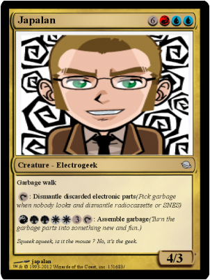
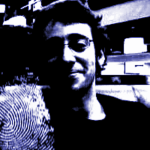

Kalshagar / AlanFromJapan is of course a pseudonym.
I'm Alain V., French ("bonjour ♪"), 30 something, living in Japan for years and Senior software engineer and project manager in a finance company (yes, we're evil). I often go by pseudonym of AlanFromJapan or more simply Alan.
Kalshagar, consider it as my private world, a little
Shangri La just for me. Hope you will enjoy the visit of my palace.
Started playing with the Arduino in May 2009. Got addicted around 5 minutes later.
Btw I
really suck at electronics, to a point you can't imagine. I'm not bad with an iron, quite good with a PC, but really lame with design and I don't understand half of what I do ... so correct me if I'm wrong!
I started learning electronics a bit more seriously but there is still lots to do down the road ...
Other stuffs include
photography http://kalshagar.deviantart.com/, litterature, gaming and various geek stuffs.
